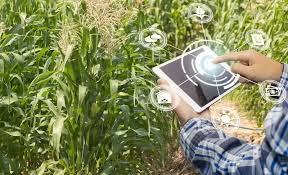

Principais Dados e Estatísticass
O impacto da tecnologia reflete diretamente na eficiência e no volume de produção do setor: Produtividade: Em propriedades conectadas e tecnificadas, a produtividade agrícola chega a ser, em média, 37% maior do que em áreas sem conectividade. Ecossistema de Inovação: O Brasil encerrou 2025 com um recorde de 2.075 agtechs (startups do agro), um aumento de 5% em relação ao ano anterior, segundo o Radar Agtech Brasil. Crescimento do PIB: Para 2025, o PIB agropecuário tem projeção de crescimento entre 2,5% e 6%, impulsionado pela tecnologia e por uma safra estimada em mais de 322 milhões de toneladas. Eficiência de Insumos: O uso de plataformas de dados e inteligência artificial pode gerar uma economia de até 30% em insumos (água, energia, fertilizantes) e aumentar a produção total em 20%.
.jpeg )
Tecnologias Dominantes no Campo
As ferramentas mais adotadas visam o monitoramento em tempo real e a automação: Drones e Satélites: Utilizados para demarcação de solo, análise de saúde das plantas (NDVI), contagem de animais e pulverização localizada. Agricultura de Precisão: Emprego de sensores de solo (umidade e nutrientes) e GPS em maquinários para aplicação variável de fertilizantes, reduzindo o desperdício. Inteligência Artificial (IA): Aplicada para prever padrões climáticos e auxiliar na tomada de decisão sobre o momento ideal de plantio e colheita. Maquinário Autônomo: Tratores e colheitadeiras com pilotos automáticos e telemetria integrada, que reduziram em até 25% o consumo de combustível em fazendas modelo.

Tendências para 2025-2026
IA Generativa no Campo: Parcerias entre órgãos como a Embrapa e o governo federal estão testando IAs para oferecer assistência técnica digital personalizada aos produtores. Rastreabilidade via Blockchain: Crescente demanda por transparência na cadeia de suprimentos para garantir a origem sustentável dos produtos para exportação. Conectividade Rural: Expansão da infraestrutura (como 5G e internet via satélite) para permitir que dados de campo sejam processados em nuvem instantaneamente. Fontes Consultadas TOTVS - Tecnologia na agricultura: importância e benefícios Forbes Brasil - Crescimento das Agtechs em 2025 Governo Federal - Recordes de Exportação e Superávit do Agro CNN Brasil (YouTube) - Digitalização e produtividade no campo Alta Defensivos - Tendências do agronegócio para 2025